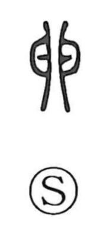

卵

Uncategorized
Kun: tamago | On: ran
egg ・ ovum
Explanation
A pictograph of two eggs placed opposite each other, the seal-script forms even suggesting a pair of eggs hanging from a branch. The Shuowen explains that creatures not nourished by milk are born from eggs and hatch, capturing the broader idea of oviparous life. Although earlier inscriptions are not attested, the seal-script shapes make the intention clear: this character depicts eggs and means “egg.”